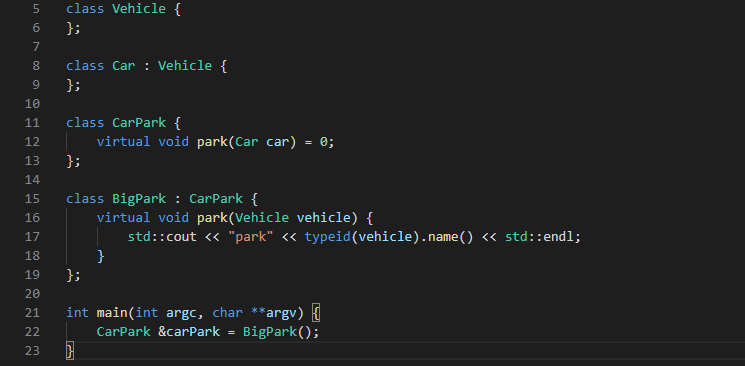

class: center, middle # Nominal Types in TypeScript ## Bob Cook ( @typescriptbob ) ??? I posted this on twitter last week. So for the three of you who read it, you can go to sleep now. --- ## Here is some code <img src="bug.png" width="90%" /> ??? We alias AccountCode and UserName to string -- #### Can you spot the bug? -- #### Is the IDE helping? ??? In line 19 we accidently pass accountCode instead of UserName --- ### In Java I would create classes ??? My java developer friends always want to create classes for everything. Here I create a class for AccountCode and a class for UserName The IDE is not helping but javac produces an error at line 30. -- <img src="java.png" width="100%" /> -- <img src="javac.png" width="75%" /> --- ### I can do the same thing in C# # ??? The code is very similar to the java Again the IDE does not help but the compiler does That says "Cannot convert from AccountCode to UserName" -- <img src="csharp.png" width="90%" /> -- <img src="csharp_error.png" width="70%" /> --- ### and C++ ??? See on line 34 the red squiggle. --  -- Note how vs.code highlights the error for us here --- ### So let's do the same thing in TypeScript -- <img src="tsclasses.png" width="97%" /> ??? I create a class AccountCode and a class UserName I still have my bug on line 23. but no red squiggle. I can run tsc. No error. -- <img src="tsc.png" width="66%" /> -- #### no error --- ### Why is there no error in the TypeScript code ? -- TypeScript is structurally typed -- ```js type Thing1 = { x: number; y: number; } ``` -- is the same type as -- ```js type Thing2 = { x: number; y: number; } ``` ??? TypeScript does not care what you call things. It only cares about the structure. --- We can solve this problem using -- ### Symbols -- and -- ### Intersection Types --- ## What are Symbols ? -- A Symbol is a special type of javascript object ??? To explain let's look at some code the Symbol function returns a unique object This was added in ES6 so you can add fields to a class which are some ways private (if you don't share the symbol) The second example illustrates that even passing a string to Symbol, the symbols are still unique. The third example uses Symbol.for. This is a backdoor they added for some reason. Typescript gets it wrong here. Apparantly it is a 'Design limitation' -- <img src="symbol_use.png" width="97%" /> -- Read more at https://codeburst.io/a-practical-guide-to-es6-symbol-3fc90117c7ac --- ## What are Intersection Types ? -- <img src="venn.png" width="60%" /> ??? Consider creating a type Computer and a type Heater. The union is any object which can be a Computer or a Heater while the intersection is the objects which have characteristics of both a Computer and a Heater. You can interest and union intrinsic types too, but there is no object which has the characteristics of both a number and a sting. -- The intersection of Computer and Heater is HotComputer -- but the intersection of String and Number is the empty set {} --- <img src="type_intersection.png" width="97%" /> Read more at https://www.typescriptlang.org/docs/handbook/advanced-types.html#intersection-types ??? Here we illustrate this in code Note lines 11 and 12 are invalid. The interesection is only satisfied by the object which has properties of both Computer and Heater But the union accept anything with the Computer properties or the Heater properties. Note the last line. Typescipt has equated the StingAndNumber types as equivalent to never --- ### Using this technique -- We intersect each of our types with a Symbol ??? We define AccountCode as AccountCodeEx with a readonly symbol Similarly for UserName Note we also have to use a type assertion when we create the objects. But the IDE now detects our mistake. -- <img src="symbol.png" width="105%" /> -- Note how we need to use a type assertion to create the object instances --- ### We can make this even simpler -- <img src="noclasses.png" width="110%" /> -- Now our code is very similar to the original --- Read this book <img src="boris.jpg" width="40%" /> ??? I learnt this trick from page 152 and there are another 288 great pages The presentation is written using remark.js and needs a web server to render correctly. -- Find the code and this presentation source at https://github.com/typescriptbob/nominal_types -- Live presentation at http://typescriptbob.com (note no SSL)